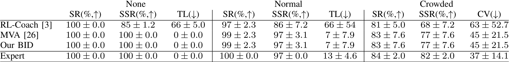

A_Brain_Inspired_Local_reference_2025
Table1 · A Brain-Inspired Perception-Decision Driving Model Based on Neural Pathway Anatomical Alignment
2025期刊 arXiv
TABLEI RESULTSIN TOWN02.THEEXPERTREFERSTOREINFORCEMENTLEARNING [3],WHILE RL-COACHREFERSTO COACHIMITATIONLEARNING.CARLA ISUSEDTOEVALUATEALLMETHODS.3EXPERIMENTWITHVARIOUSRANDOMSEEDSAREUSEDTOCALCULATETHEMEANVALUESANDSTANDARD DEVIATIONS. BETTERPERFORMANCEISINDICATEDBYHIGHERVALUESFORMETRICSMARKEDWITH ↑,WHILELOWERAREPERFERREDFORTHOSE MARKEDWITH ↓.